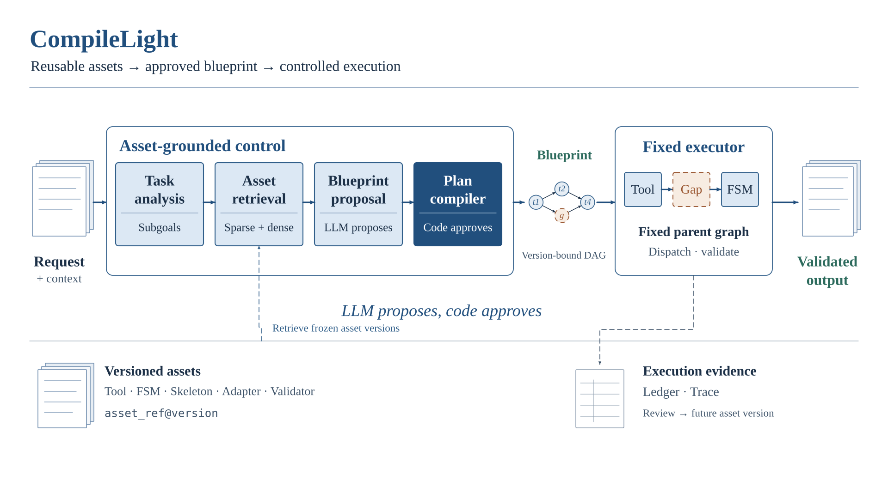
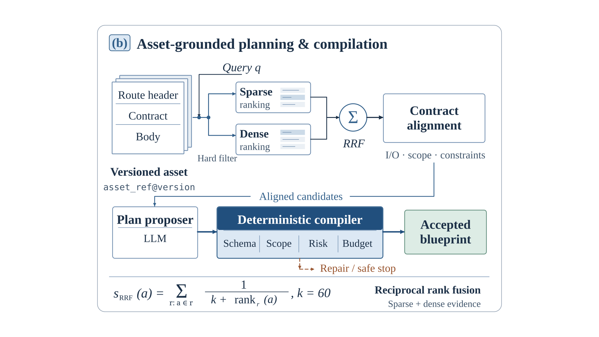
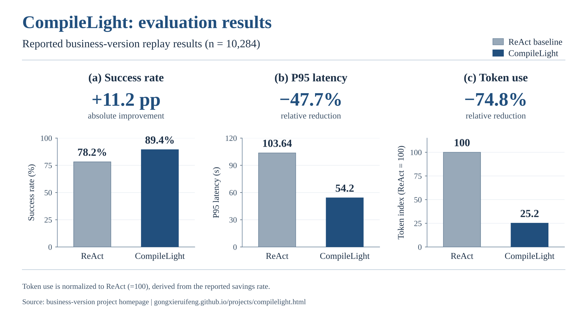

复用已经验证的能力
将工具、状态机片段和工作流整理为版本化资产，先检索候选能力，再通过契约匹配确认它们能否覆盖当前任务。
让 LLM 提议计划，让代码决定能否执行。
轻量级智能编译守卫 Agent。围绕企业客服中的重复任务，优先复用版本化资产，仅对未知缺口使用有界推理，再由固定执行器消费经校验的计划与产物。
评测范围：业务版 10,284 次流量回放。下方区分业务成果与公开轻量版实现。
企业客服 Agent 的高频任务往往具有相似的知识需求与执行路径。如果每次都让模型重新规划，会重复消耗 Token，并使工具权限、状态变化和执行证据难以统一管理。
将工具、状态机片段和工作流整理为版本化资产，先检索候选能力，再通过契约匹配确认它们能否覆盖当前任务。
模型可以提出 Blueprint，代码负责检查结构、作用域、风险与预算。计划与具体资产版本绑定后，才交由固定执行器消费。
请求经过任务分析、资产检索和契约对齐，形成 Blueprint 提案；Compiler 将通过校验的提案绑定为版本化 DAG，固定 Meta-Executor 再执行已批准的步骤。

资产将召回信息、接口契约和执行内容分开组织：Route Header 用于检索候选，Contract 用于任务对齐，Body 保存对应能力的实现或结构。稀疏与稠密检索通过 RRF 融合排名，后续再进行契约匹配与计划编译。

| 资产类型 | 承担的职责 |
|---|---|
| Primitive Tool | 可调用的基础工具能力 |
| FSM Shard | 可复用的确定性状态机片段 |
| Workflow Skeleton | 用于规划复用的工作流骨架 |
| Adapter | 对齐不同步骤的输入输出 |
| Validator | 校验中间产物与输出契约 |
校验计划结构、参数类型、依赖关系与输入输出绑定。
核对资产快照与工具授权范围，约束本次运行可使用的能力。
检查风险与副作用策略，禁止不满足执行政策的计划进入执行。
约束计划步骤与调用预算；失败计划受限修复或进入安全停止。
Schema / Scope / Risk / Budget 是展示分组；编译检查还覆盖资产绑定、覆盖情况和 Validator 等。执行开始时固定 Snapshot，运行中不热切换资产版本。
三种模式描述已有资产对任务的覆盖程度。模式决定哪些步骤可以复用、哪些部分需要解析；最终都由固定执行器消费经批准的计划与校验产物。
已有资产覆盖任务步骤，执行阶段复用确定性能力，减少额外决策推理。
前置任务分析与规划的模型消耗仍计入本次请求。
保留已有资产步骤，对未覆盖部分进行有界解析，再将校验产物交给执行器。
根据实际缺口分配资产复用与推理步骤。
在冻结上下文与工具约束下完成新的规划或探索，仍可沿用任务中已有的资产步骤。
新任务也受编译、验证与调用预算约束。
此处呈现职责关系。公开轻量版参考实现先由控制服务解析缺口，再向固定执行器提交预计算结果。
在业务版 10,284 次流量回放中，与 ReAct 基线比较，综合成功率、端到端 P95 和 Token 开销采用以下口径。

| 指标 | ReAct | CompileLight | 变化 |
|---|---|---|---|
| 综合成功率 | 78.2% | 89.4% | 增加 11.2 个百分点 |
| 端到端 P95 | 103.64s | 54.2s | 相对降低 47.7% |
| Token 用量指数 | 100 | 25.2 | 节省 74.8% |
以上为业务版回放结果，公开轻量版代码用于展示可运行的核心机制，两者分别对应各自的版本与用途。
本页展示企业场景中的业务版设计与成果；GitHub 仓库提供便于本地运行和理解机制的轻量公开版。两者保留资产复用、计划编译和固定执行器的主线，数据库与模型选型有所区别。
| 层级 | 业务版 | 公开轻量版 |
|---|---|---|
| 资产存储与检索 | PostgreSQL FTS + pgvector，RRF 融合 | SQLite FTS5 + NumPy，RRF 融合 |
| 模型接入 | Claude / DeepSeek / GPT，可切换 | Ollama 本地模型 |
| 服务与执行 | FastAPI + Gradio，LangGraph 固定 Meta-Executor | FastAPI + Gradio，LangGraph 固定父图 |
| 评测口径 | 本页的 10,284 次流量回放成果 | 以仓库对应实现与运行说明为准 |
架构图为结合业务介绍与公开核心实现整理的概念图。公开实现参考固定提交 f5c9f03。